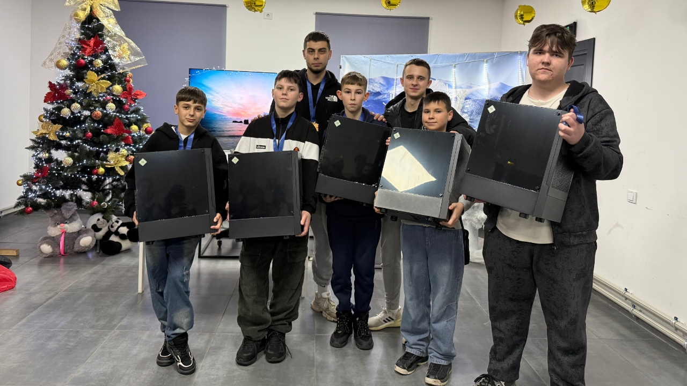
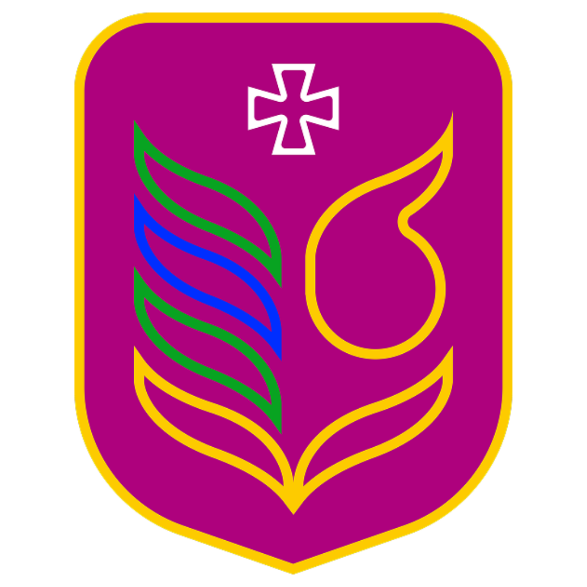

КЗ "ДЮСШ» - є закладом позашкільної освіти спортивного спрямування. Заклад забезпечує всебічний та гармонійний розвиток здібностей вихованців в обраному виді спорту, створює необхідні умови для фізичного розвитку, оздоровлення, відпочинку і дозвілля дітей та молоді, надає необмежені можливості для самореалізації, а також забезпечує підготовку спортсменів для професійного спорту. Головною метою є здійснення навчання і виховання дітей у позаурочний та позанавчальний час.